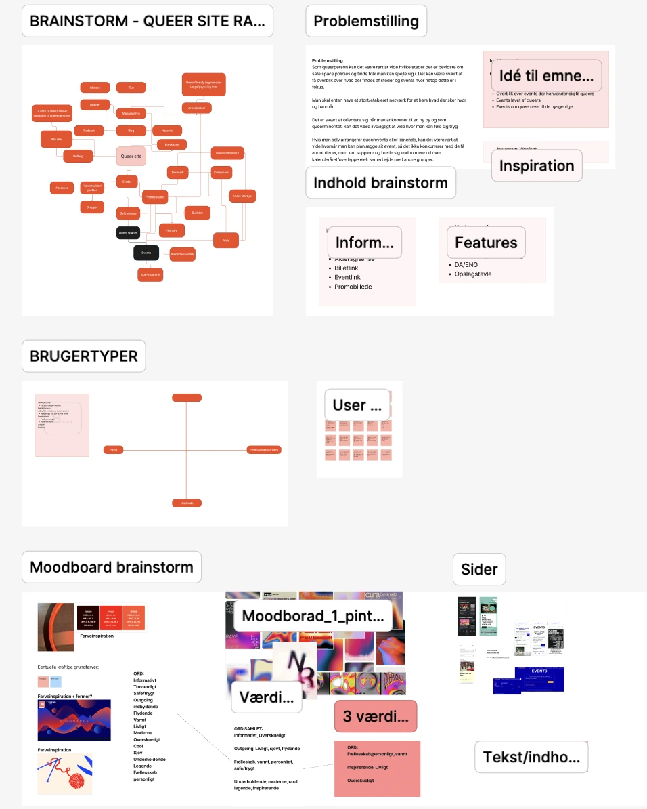
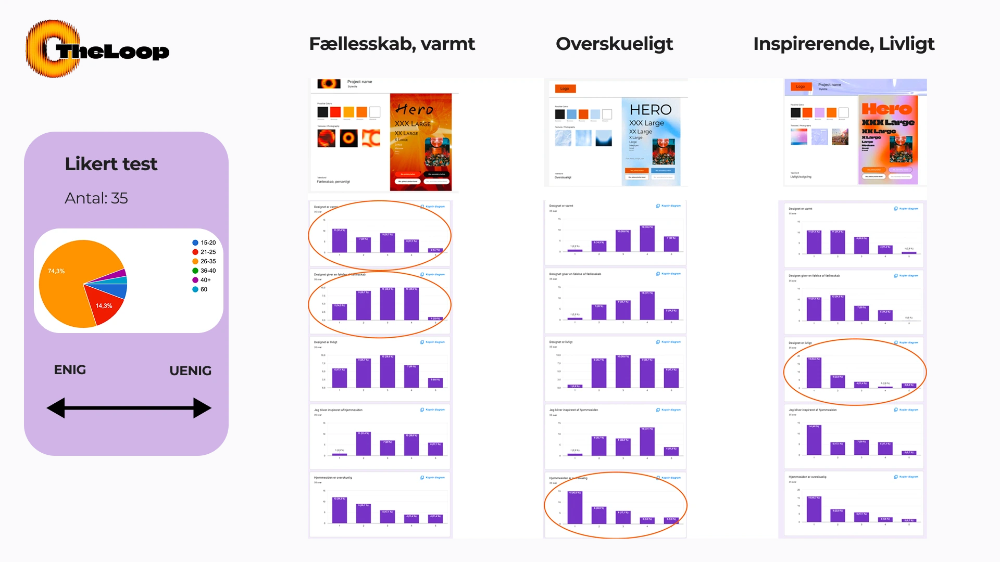
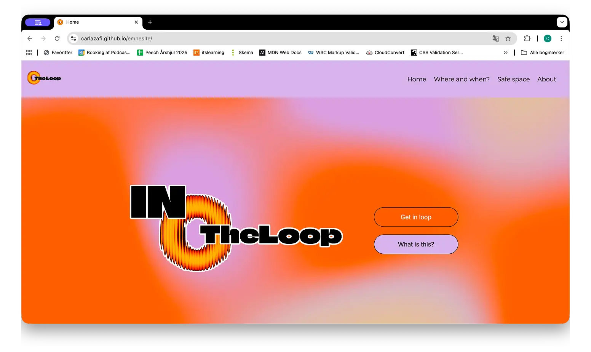

Projekter
Grundlæggende UI/UX
Proces
Forståelse for en arbejdsproces og dertilhørende værktøjer: idéudvikling, research, designudvikling og tests.
Vi lærte at definere brugertyper og starte designprocesser ud fra værdiord og moodboards.
For første gang udviklede vi selv wireframes der herefter blev til hifi prototyper
Reflektion
Temaet lærte mig at dokumentere alt jeg laver! Det blev hurtigt tydeligt at det er bedre at have for meget research man kan vende tilbage til og bruge senere. Det blev tydeligt at man med UI-/UX-principper samt en iterativ designproces, nemmere kan arbejde med udgangspunkt i brugeren, hvilket hjælper til udviklingen af selve opsætningen af siden.


